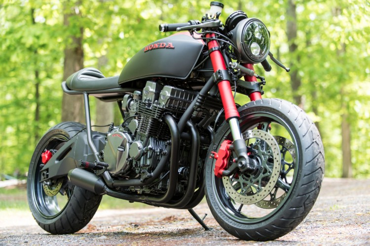

- Typ silnika: Chłodzony powietrzem i olejem, 4-suwowy, 4-cylindrowy.
- Układ: 4-cylindrowy, rzędowy,
- Rozrząd: DOHC, 4 zawory na cylinder.
- Pojemność: 747 cm³
- Średnica x skok tłoka: 67 x 53 mm.
- Stopień sprężania: 9,3:1.
- Układ zasilania: cztery gaźniki Keihin 34 mm.
- Max. moc: 73 KM przy 8500 obr./min
Honda CB 750 to motocykl klasy naked produkowany przez japoński koncern z tzw. Wielkiej Czwórki od 1992 roku. Mocny silnik, ponadczasowy wygląd i legendarna jakość wykonania Hondy - tyle wystarczyło, aby model CB 750 podbił serca motocyklistów z całego świata. Honda CB 750 została wyposażona w czterocylindrową jednostkę w układzie rzędowym o pojemności skokowej 747 ccm. Chłodzony powietrzem czterosuw z rozrządem DOHC (cztery zawory na cylinder sterowane podwójnym wałkiem rozrządu) generuje moc maksymalną 73 KM i maksymalny moment obrotowy 62 Nm. Taka specyfikacja w motocyklu o masie własnej 215 kilogramów (na sucho, bez płynów eksploatacyjnych i paliwa) to gwarancja dynamicznych przyspieszeń i prędkości maksymalnej ponad 205 km/h. Na ¼ mili model CB 750 uzyskał wynik 12,4 sekundy, przekraczając linię mety z prędkością 170 km/h.Przy przednim kole zamontowano dwie wentylowane tarcze hamulcowe o średnicy 296 mm i dwutłoczkowe zaciski hamulcowe, zaś przy tylnym - wentylowaną tarczę hamulcową o średnicy 240 mm i zacisk jednotłoczkowy.